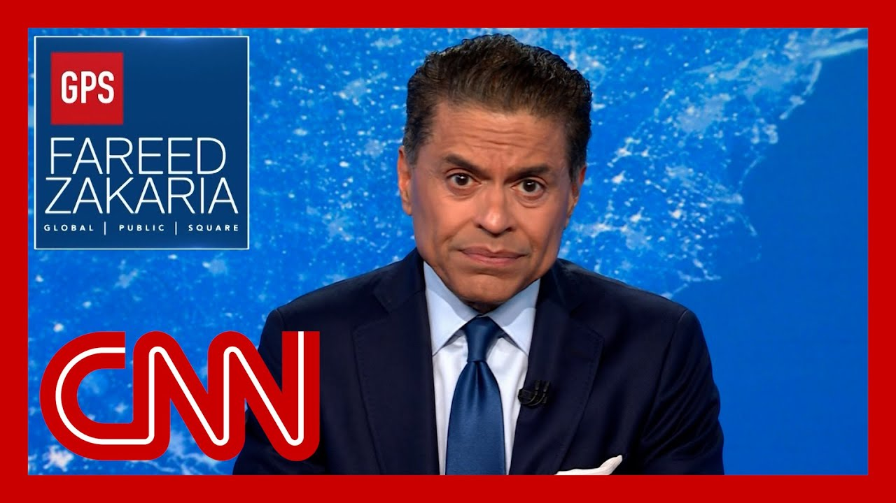

【法里德的观点：面对地缘政治挑战，美国正在自我分裂】
Summary: Historians will note China's rise and Russia's resurgence as challenges to U.S. hegemony, but the unprecedented internal division, exemplified by attacks on elite universities like Harvard, threatens America's global leadership in education and innovation.
摘要： 历史学家会将中国的崛起和俄罗斯的复兴视为对美国霸权的挑战，但史无前例的内部分裂——例如对哈佛等精英大学的攻击——正威胁着美国在教育和创新领域的全球领导地位。

⏱️ Estimated Reading Time: 8 min
When historians write about the challenges to America's global hegemony, they will point to the rise of China, the first full fledged competitor to the United States in decades.
当历史学家书写对美国全球霸权的挑战时，他们会指出中国的崛起——这是几十年来美国第一个全面成熟的竞争对手。
They'll also note the return of Russia and its efforts to disrupt the American led security order in Europe.
他们还会注意到俄罗斯的回归及其破坏美国主导的欧洲安全秩序的努力。
These are familiar patterns in the rise and fall of world powers.
这些都是世界大国兴衰的熟悉模式。
What's new and surprising is that these challenges, far from uniting America, have turned it on itself with its government tearing down many of the crucial elements of America's extraordinary success.
新颖且令人惊讶的是，这些挑战非但没有团结美国，反而使其自我分裂，政府正在摧毁美国非凡成功的许多关键要素。
Consider the Nature Index, perhaps the most comprehensive guide to high quality research in the sciences.
以《自然指数》为例，它可能是科学领域高质量研究最全面的指南。
It tracks contributions to the world's leading academic journals.
它追踪对世界顶尖学术期刊的贡献。
Its newest rankings show what scientists already know.
其最新排名揭示了科学家们早已知道的事实。
China is leaping ahead of the top ten academic institutions in the nature Index.
中国正在《自然指数》前十名学术机构中跃升。
Nine are now Chinese, but still sitting in the topmost position on that list.
其中九所现在是中国机构，但位居该榜单首位的仍是——
An American institution, Harvard.
一所美国机构：哈佛大学。
And it is this university that Donald Trump is trying to destroy.
而唐纳德·特朗普正试图摧毁的正是这所大学。
The Trump administration's war on Harvard is bizarre in many ways, claiming to be about fighting antisemitism.
特朗普政府对哈佛的宣战在许多方面都很荒谬，声称是为了打击反犹太主义。
It is demanded that the university cede control over large parts of its academic affairs and hand over private information about its international students.
它要求大学放弃对大部分学术事务的控制权，并交出国际学生的私人信息。
It's never explained why it has singled out Harvard for this retribution, and the problems that it claims to be concerned about are not particularly egregious at Harvard.
从未解释为何单独针对哈佛进行报复，且其所声称关切的问题在哈佛并不特别严重。
Its main weapon, the withdrawal of federal research funds to Harvard, is directed at the parts of the university that have virtually nothing to do with the woke ideology to which Trump objects.
其主要武器——撤销对哈佛的联邦研究资金——针对的是大学中与特朗普反对的"觉醒"意识形态几乎无关的部门。
More than 90% of the research funds the government has threatened to deny.
政府威胁要取消的研究资金超过90%。
Harvard offered research in the life sciences studying diseases, medicines and other such topics.
哈佛提供的研究涉及生命科学，研究疾病、药物等课题。
Denying funding for cancer research will not affect people protesting for Palestine.
取消癌症研究资金不会影响声援巴勒斯坦的抗议者。
It will almost certainly knock Harvard off that nature index list.
但这几乎肯定会将哈佛从《自然指数》榜单上除名。
America's universities have problems, and I've spoken about them, urging them to abandon fashionable political causes and the obsession with diversity and marginalization, and return to a focus on excellence.
美国大学存在问题，我曾敦促它们放弃时髦的政治议题和对多样性及边缘化的执念，重新聚焦卓越。
But it's worth noting that these are still by far the world's leaders in higher education.
但值得注意的是，它们仍是迄今为止全球高等教育的领导者。
When you consider teaching and research in the academic environment more broadly.
当你更广泛地考量学术环境中的教学和研究时。
This can be seen simply by the tsunami of applications that America's top universities get from the brightest students around the world.
仅从美国顶尖大学收到的全球最优秀学生如潮水般的申请即可看出。
It would be hard to find many industries where America is more dominant.
很难找到美国更具主导地位的许多行业。
China's President XI Jinping, and his erstwhile rival for that role disagreed about many things, but both believed that the best place in the world that their daughter and son could go for higher education was Harvard University.
中国国家主席习近平与其昔日竞争对手在许多问题上存在分歧，但他们都认为子女接受高等教育的最佳去处是哈佛大学。
It's not an accident that so many of America's technology companies are located in Northern California and Boston.
美国众多科技公司位于北加州和波士顿并非偶然。
These clusters formed around great universities like Harvard, MIT, and Stanford.
这些集群围绕哈佛、麻省理工和斯坦福等顶尖大学形成。
But the Trump administration seems determined to destroy this unique advantage.
但特朗普政府似乎决心摧毁这一独特优势。
It has proposed cutting government funding for science by more than $25 billion next fiscal year, and has declared war on the country's leading universities.
它提议下一财年削减超过250亿美元的政府科学资金，并向该国顶尖大学宣战。
The budget bill, recently passed in the House of Representatives, punishes the very best universities by taxing their endowments, singling them out from all nonprofits.
众议院最近通过的预算法案通过对捐赠基金征税来惩罚最优秀的大学，将其从所有非营利组织中单独列出。
But it raises the tax rate massively.
但大幅提高了税率。
On the most successful research institutions in business, you water your roses and you prune your weeds.
对于商业中最成功的研究机构，你该浇灌玫瑰而修剪杂草。
This seems like the opposite strategy.
这似乎是相反的策略。
America continues to lead the world in its ability to attract the world's brightest students.
美国在吸引全球最聪明学生方面仍领先世界。
China draws mainly on the talents of the best of its billion plus population.
中国主要依靠其14亿人口中最优秀的人才。
But America has had its pick of the best of the world's 8 billion people.
但美国可以从全球80亿人中挑选最优秀者。
The results speak for themselves of America's top ten companies.
结果不言自明：美国前十名公司中——
Five are run by immigrants.
五家由移民执掌。
Bringing in international students also benefits the economy as a whole, generating more than $40 billion and supporting nearly 380,000 jobs just last year.
引进国际学生也使整体经济受益，仅去年就产生超过400亿美元收入并支撑近38万个工作岗位。
But the latest Trump assault has been on these very students, putting their visa processes on hold, threatening to scrutinize their social media posts and sending a signal generally that they're not welcome, will be watched and can be summarily thrown out on a whim.
但特朗普最新的攻击矛头直指这些学生：暂停签证流程、威胁审查其社交媒体帖子，并普遍释放信号表明他们不受欢迎、将被监视且可能被随意驱逐。
We are already seeing the results.
我们已经看到结果。
Searches on the internet for American PhDs are down between 25 and 40%, while those for Australian and Swiss universities are up by even more than that around four decades ago.
对美国博士学位的网络搜索下降了25%至40%，而对澳大利亚和瑞士大学的搜索量比四十年前增长得更多。
When I thought about applying to American universities from India.
当我从印度考虑申请美国大学时。
I was impressed by their reputation in research and teaching.
它们的研究和教学声誉令我印象深刻。
But I was also attracted by the idea of America, a truly free and open society, one that welcomed people from around the world.
但我也被美国的理念吸引——一个真正自由开放的社会，欢迎世界各地的人们。
And where in President Reagan's words, our origins matter less than our destinations.
用里根总统的话说：在那里，我们的起点不如目的地重要。
In a competitive world where other countries have caught up in so many ways, this is still America's unique advantage if we can cherish it rather than destroying it.
在其他国家已多方面赶超的竞争世界中，这仍是美国的独特优势——只要我们珍惜而非摧毁它。